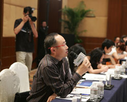
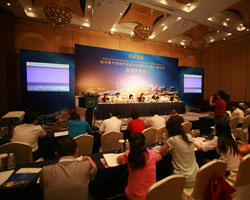

2007年3月，胡锦涛总书记对重庆发展提出 “314总体部署”，今年2月国务院3号文件，提出重庆未来发展的13个黄金定位，确立了重庆新一轮发展的制高点，给予了重庆在西部发展的先机。重庆发展，已经提升为国家战略，成为国家战略和区域活力的交汇、长江上游地区的经济中心和中国西部地区增长极。著名财经媒体《福布斯》中文版杂志连续5 年发布的福布斯中国大陆最佳商业城市榜，重庆均在西部地区排名中位居前列。
|  |
正是基于对重庆经济的关注，此次《福布斯》中文版立足于重庆当地，放眼中国西部经济发展，携手重庆市商业委员会、重庆市渝中区人民政府，于2009年6月29日在重庆洲际酒店宴会厅召开新闻发布会，正式宣布“西部造极”——福布斯中国城市投资与发展论坛（重庆?解放碑）将于2009年7月23日在重庆市解放碑CBD隆重召开。届时，主办方将邀请国内外著名区域经济学家、国家商务和财政部门高层领导、西部地区政府领导、驻华领事、跨国企业商务领袖、金融业领袖、咨询业领袖等齐聚论坛，共同探讨“西部增长极和重庆的聚集与辐射”，为重庆乃至中国西部城市的投资与发展推波助澜。
中共重庆市渝中区委常委、重庆解放碑CBD管委会主任章琳，重庆市商业委员会主任助理孙华培，以及《福布斯》中文版总经理张颖、《福布斯》中文版总编辑周健工、《福布斯》中文版市场总监高山共同出席了新闻发布会。
中共重庆市渝中区委常委、重庆解放碑CBD管委会主任章琳首先为新闻发布会致辞，她表示：“3?14部署以后，重庆作为中国西部最重要的城市之一，作为中国‘西部金三角’的核心城市，更是备受瞩目。借用我们市长的一句话：如果把重庆浓缩成一点，那就是渝中区，如果把渝中区再浓缩为一点，那就是解放碑……如今，重庆解放碑CBD已经迎来新一轮发展机遇——国务院3号文件针对重庆的政策推力和项目支撑，渝中区建设长江上游地区现代服务业核心区和总部经济基地的战略定位，以及倾力打造“内陆香港”的城市理想，将给解放碑CBD带来更大的发展空间和更多的财富商机。值此重要发展时期，我们需要更开阔的发展视野、更丰富的发展资源、更强劲的发展推力和更高端的智力支撑，这也是我们引进福布斯论坛这一强大品牌落地重庆解放碑CBD举办的主要原因。”
|  |
重庆市商业委员会主任助理孙华培致辞表示：“胡锦涛总书记在“314”总体部署中明确提出，要把重庆建设成为长江上游地区的经济中心。经济中心的核心框架应包括商贸中心、金融中心、科教文化信息中心、交通枢纽中心，以及以高科技为支撑的现代产业基地……我们完全有理由相信，重庆商业工作的明天是美好的，在不久的将来把重庆建成长江上游购物之都、中国美食之都、西部地区会展之都的目标一定能够实现。”
《福布斯》中文版总经理张颖代表《福布斯》中文版杂志为发布会致辞，她表示：“能够与重庆市渝中区合作，是我们期待已久的。这次论坛的举办，一方面把《福布斯》中文版杂志对重庆的关注乃至中国西部经济的关注直接带到重庆渝中区，直接为重庆的发展起到推动作用；另一方面，也为更多的《福布斯》中文版读者了解重庆的发展，了解西部的经济建设打开了一扇窗口。推动重庆渝中区的经济发展不仅是响应国家大力发展西部地区的政策，更是《福布斯》中文版关注中国本土企业发展商业环境的直接体现。”
《福布斯》中文版总编辑周健工在接下来的致辞中表示：“《福布斯》中文版关注重庆已经有相当长的时间，从2004年开始发布‘福布斯中国大陆最佳商业城市榜’以来，重庆一直在西部地区位居前列。此次《福布斯》中文版与重庆市商业委员会、重庆市渝中区人民政府携手举办‘福布斯中国城市投资与发展论坛’，是我们以论坛形式更深入了解西部地区商业城市以及西部经济发展的第二次尝试，也是《福布斯》中文版杂志与直辖市合作举办城市论坛的首次尝试。我们不仅关注中国本土企业家创业与创富的过程，而且关注企业成长的本土商业环境，同时我们认为，重庆正在努力成为西部经济发展的重要增长极，重庆渝中区的发展将带动重庆地区乃至西部地区的经济发展，这为中国西部的本土企业以及跨国公司在中国西部的发展都创造了良好的条件。”
| 章琳 中共重庆市渝中区委常委 重庆解放碑CBD管委会主任 |
张颖 《福布斯》中文版总经理 |
||
| 孙华培 重庆市商业委员会主任助理 |
周健工 《福布斯》中文版总编辑 |
||
| 李晓峰 重庆市渝中区人民政府办公室副主任 |
高山 《福布斯》中文版市场总监 |
||
| 李勇 中共重庆市渝中区委宣传部副部长 |
主办单位：
《福布斯》中文版
重庆市商业委员会
重庆市渝中区人民政府
承办单位：
重庆解放碑中央商务区管理委员会
特别协办：
重庆前景投资咨询有限公司
活动时间：
2009年7月 23日（星期四）
8：30-17：30
活动地点：
重庆洲际酒店
活动规模：
200人
战略媒体联盟：
21世纪经济报道 21世纪商业评论 理财周报 中央人民广播电台经济之声 21世纪网
独家战略合作媒体：
新浪财经
首席门户网站支持：
网易财经
独家新媒体支持：
凤凰网
独家财经网站支持：
和讯
首席财经专业网站支持：
金融界